Chapter 3—Application Logic
Chapter 3—Application Logic
In this chapter you’ll learn how to add TypeScript logic to your app, how to create services that talk to backend endpoints, and how to architect an app to share code with Angular 2 web apps. There’s a lot to cover, so let’s start by discussing how to handle events and data binding.
Table of contents
3.1: Events
Most user interfaces are driven by events. In NativeScript apps, those events are usually some user action, such as tapping, swiping, or rotating—and NativeScript abstracts the iOS- and Android-specific code for handling such events into a handful of easy-to-use APIs. Let’s start with the most common event you’ll use in a NativeScript app: tap.
Exercise: Add a tap event handler
Open app/app.component.ts, find the existing sign in button within your component’s template (<Button text="Sign in"></Button>), and replace it with the following code:
Next, in the same file, replace the current AppComponent declaration with the one shown below:
The (eventName)="functionName()" syntax is part of Angular 2’s event binding system, which lets you bind an event that occurs on a UI element to a function in your component’s class. In this case, the (tap)="submit()" syntax tells Angular to run the AppComponent class’s submit() function whenever the user taps the sign in button.
To verify this binding works tap the “Sign In” button in your app; you should see “hello” logged in your terminal or command prompt as such:
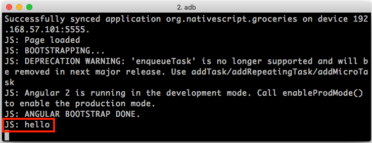
TIP:
- You can find a list of events available for each UI element on its API documentation page. For instance, the button element’s API documentation lists its
tapevent.- The Angular 2 docs have a helpful cheat sheet that includes the various syntaxes available when building templates. Don’t worry too much about knowing how all these work at the moment; we’ll progressively introduce the most common syntaxes in this guide.
With the tap event in place, you now have a way of tying the UI elements in your template to your TypeScript code. To make a login page actually work though, we need to introduce one other way of connecting a template to code: data binding.
3.2: Data binding
Angular 2 provides several ways to bind data in your TypeScript code to UI controls, and through the magic of NativeScript those same methods are available in your iOS and Android apps.
The first of these is a way to bind UI attributes to properties defined in your TypeScript class. Let’s look at how it works.
Exercise: Using Angular 2 attribute binding
In app/app.component.ts replace the current AppComponent declaration with the one shown below, which adds a new email property, and changes the submit() method to display its value:
Next, find the first <TextField> in your component’s template and replace it with the code below, which adds a new text attribute:
The key thing to note here is the [text]="email" attribute on the <TextField>. This is Angular 2’s syntax for attribute binding, and it allows you to bind the value of an attribute to a property in your TypeScript class. In this case, the text attribute of the <TextField>—which is roughly equivalent to a DOM <input>’s value attribute—is bound to the AppComponent’s email attribute. Therefore the app now has an email address prefilled when it loads:
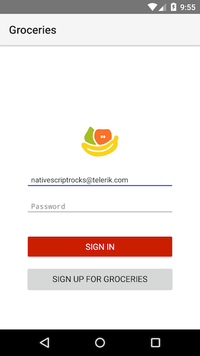 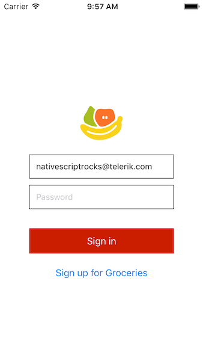
NOTE: It’s very easy to confuse Angular 2’s event binding syntax
(eventName)="functionName()"with its attribute binding syntax[attributeName]="propertyName". Don’t worry though; if you get them backwards, the problem is usually easy to debug, as the functionality you’re attempting to add just won’t work. These syntaxes are common enough that you’ll be using them a lot, and eventually you should be able to commit them to memory.
This attribute binding approach works really well when you need the data binding to be one way—that is, when you need TypeScript properties, and changes to those properties done in TypeScript code, to appear in the user interface. But in the case of user interface controls that accept user input, such as the text field in this example, usually you need data binding to work two way—that is, you additionally need changes the user makes to data via form controls to be reflected in your TypeScript code.
To show that the current example’s data binding is only one way, head back to your app, change the email text field’s value (type a few extra letters or something like that), and then tap the “Sign In” button. Because your submit() function alerts the current value of your component’s email property—alert("You’re using: " + this.email)—you might expect to see the updated value in the alert. Instead, however, you see the original value. Notice how the typed text and the alert value don’t match in the screenshot below.
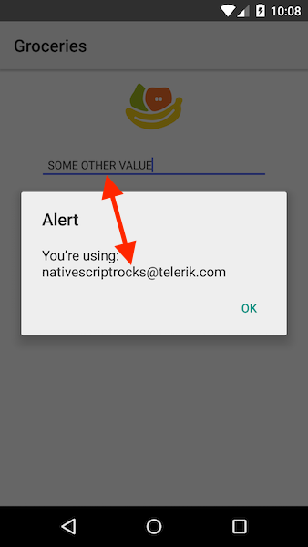
To fix this, you need to switch to Angular 2’s two-way data binding syntax.
Exercise: Two-way data binding with Angular 2
In app/app.component.ts, find the first <TextField>, and replace it with the <TextField> below, which introduces a new [(ngModel)] attribute:
Next, open app/app.module.ts and replaces its contents with the code below, which adds a new NativeScriptFormsModule to the NgModule’s list of imports.
NOTE: You can think of the list of
importsin an Angular module as the pieces of functionality needed to make your app work. In this case, theNativeScriptFormsModulemakes the[(ngModel)]syntax work with NativeScript’s UI components. If you want to dive into exactly how Angular imports work, refer to Angular’s documentation on modules.
At first glance the [(ngModel)] syntax looks more than a little odd, as it’s essentially a combination of the event and attribute binding syntax that you used in earlier examples. In the case of this example, [(ngModel)]="email" is shorthand for [text]="email" (emailChange)="email=$event", which binds the email element’s text attribute to an email property and adds a change event handler that updates the email property’s value whenever the user makes a change.
Don’t worry too much about the details of this syntax while you’re getting started. In your head you can think of [(ngModel)] as the way to implement two-way data binding when you need it on form controls. To show that it works, if you again modify your app’s email address and click the “Sign In” button, you’ll see the updated value in the alert as expected:
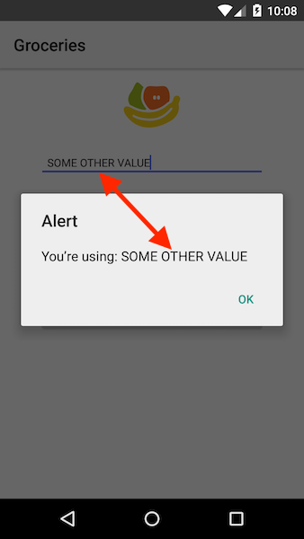
Before we move on, let’s make one additional change to show what else you can do with Angular 2’s data binding APIs. The Groceries app uses the same UI for the “Sign In” form and the “Sign Up” form. Therefore, when the user taps “Sign Up”, we need to update the text of the buttons (and eventually the functionality that occurs when you tap them). Let’s see how to make that happen.
Exercise: Using the ternary operator in templates
Open app/app.component.ts and replace the two existing buttons with the code below:
Next, replace the existing AppComponent declaration with the code below, which adds a new isLoggingIn property, and a new toggleDisplay() method:
The previous examples switches each button’s text attribute from a simple string—e.g. <Button text="Sign Up">—to an attribute binding that is dependent on a value defined in the AppComponent class—e.g. <Button [text]="isLoggingIn ? 'Sign in' : 'Sign up'">". Now, when the value of the isLoggingIn attributes changes after the user taps the bottom button, Angular is smart enough to update the text of the button automatically. The result looks like this:
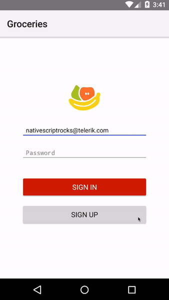 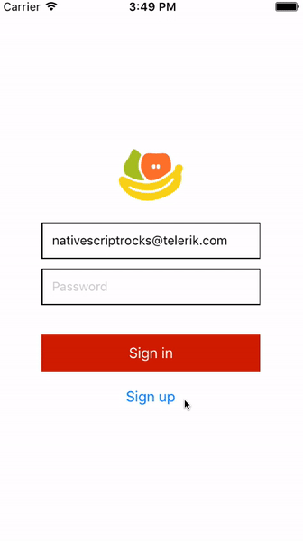
At this point, you have a basic login screen setup with two-way data binding—which isn’t bad for 20 some lines of TypeScript. (Think about how much code you’d have to write in Android Studio and Xcode to accomplish the same task.) To this point though you’ve been placing all of your logic in a single TypeScript file, which doesn’t scale all that well for real-world applications.
Before we tie this app to a backend and make this login screen fully functional, let’s take a step back and setup a structure that can scale.
3.3: Structuring your app
There are many reasons to segment any application into modular units, and you can read about the various benefits on Wikipedia. Modularizing NativeScript has one additional, unique benefit: the ability to share the code you write between Angular-2-built web apps, and Angular-2-built native apps.
Even if you have no plans to create an Angular 2 web app, separating out your code is still advantageous for a number of other reasons—testability, ease of maintenance, and so forth—but if you do have plans to build an Angular 2 web app, having a chunk of functionality that you can reuse in your native and web apps can be an invaluable time saver.
NOTE: To show that sharing code between native and web projects is possible, and not theoretical, feel free to peruse our web implementation of Groceries, which uses the exact same
sharedfolder this guide’s native implementation does.
To see how this works in action, let’s edit some files in the shared folder and set them up to be imported.
Exercise: Add a model object
Let’s start by creating a simple model object to store user data. Open app/shared/user/user.ts and paste in the following code:
This code defines a simple TypeScript class that does nothing more than define two properties—email and password. Note the use of TypeScript’s export keyword, as we’ll see why that’s important momentarily.
Next, open app/app.component.ts, and add the following import to the top of the file:
Here you import the User class that you just defined. Note the parallel between the export command used in the previous example and the import command used here. The reason the User class is available to import is because it was explicitly exported. You’ll see other examples of import and export as you go through this guide.
Next, replace the existing AppComponent definition with the one below, which uses the User class you just imported.
Instead of storing data on the AppComponent directly, you’re now using the User model object, which is reusable outside of this page and even outside of this application. You instantiate an instance of the User class in a new constructor function, which Angular 2 invokes when it bootstraps your application.
Your next step is to use this new model object in your template. To do that, replace the two existing <TextField>s with the code shown below, which updates the [(ngModel)] bindings to point at the new User object:
As one final change, because this template is getting to be a bit complex, let’s move it into a separate file. Open app/pages/login/login.html and paste in the following code:
Finally, in app/app.component.ts, replace the existing template property with the new templateUrl property shown below:
In case you got lost during this section, here’s a copy-and-paste friendly of the app/app.component.ts file you should have at this point:
TIP:
- With Angular 2 components you have the ability to specify templates and CSS styling in two places—directly within the component, or in external files. For simple components feel free to choose either approach based on your personal preference, but once your templates/styles get to ~10 lines of code, consider using external files exclusively, as mixing non-trivial UI, CSS, and TypeScript code makes your component code less readable.
- You’re free to provide any suffix for your NativeScript template file names. This guide uses
.htmlsuffixes, even though NativeScript templates aren’t HTML code, because that suffix tends to provide the best syntax highlighting in common development IDEs, and because Angular uses an HTML parser to parse the templates. This guide does not use.xmlsuffixes because Angular 2 syntaxes like(tap)and[text]are not valid XML.
With this setup you now have a User class that you can share across pages in your app and even across applications. But a model object that’s four simple lines of code isn’t all that exciting. Where this approach really pays off is when you’re able to share your business logic, and the code that hits your backend systems. In Angular 2 those classes are known as services. Let’s look at them next.
3.4: Services
A login screen isn’t all that useful if it doesn’t actually log users into anything. Therefore, our next task is to allow users to create and log into accounts. We’ll build this functionality as an Angular 2 service, which is Angular 2’s mechanism for reusable classes that operate on data.
For the purposes of this tutorial we prebuilt a handful of backend endpoints using Telerik Backend Services, and we’ll be using those endpoints to make this app functional. Let’s see how they work.
NOTE: You don’t have to use Telerik Backend Services to power your app’s backend; you can use any HTTP API in a NativeScript app, including common solutions such as Firebase and Couchbase. Telerik Backend Services is convenient for us to use for this tutorial because it lets us spin up HTTP endpoints quickly.
Exercise: Add an Angular 2 service
There are several new concepts to introduce with Angular services, so we’re going to start by stubbing out a new register() method, and then come back to the implementation later in this section. With that in mind, open app/shared/user/user.service.ts and paste in the following code:
This creates a basic Angular service with a single method that takes an instance of the User object you created in the previous section. The one new thing is the @Injectable decorator. This decorator denotes this class as a candidate for Angular’s dependency injection mechanism. For now just think of adding the @Injectable as a required convention for all services that you write.
Next, add the following line to the top of app/app.component.ts, which imports the service you just defined:
After that, add a new providers property to the existing @Component decorator. The full @Component declaration should now look like this:
The providers array is a simple list of all the Angular 2 services that you need to use in your component. At the moment you only have one service, so your providers array only has one entry.
Next, replace AppComponent’s existing constructor with the code below:
We’ll discuss what this constructor syntax is doing momentarily, as it can be confusing if you’ve never worked with Angular 2 before, but first let’s make the final change to get this example running. Find the existing submit() function in AppComponent, and replace it with the following three functions:
Now, in your app, tap the “Sign Up” button, type an email address, and tap the “Sign Up” button again. If all went well, you should see the alert below:
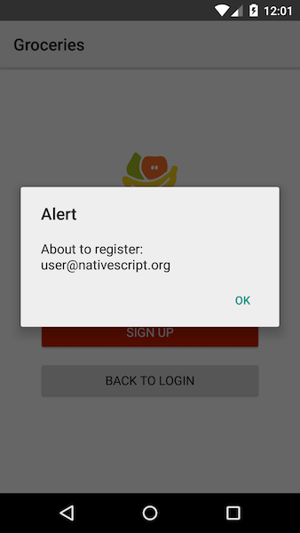 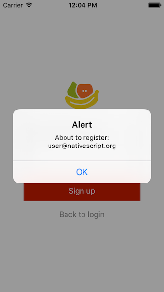
How does this code work? Let’s return to this bit of code:
``` TypeScript constructor(private userService: UserService) { this.user = new User(); } ```This is Angular 2’s dependency injection implementation in action. Because you registered UserService as a provider in this component’s providers array, when Angular sees this syntax it creates an instance of the UserService class, and passes that instance into the component’s constructor.
This begs a bigger question though: why bother with all of this? Why not run this.userService = new UserService() in the component’s constructor and forget the complexity of @Injectable and providers?
The short answer is a dependency-injection-based approach to coding keeps your classes less coupled, and therefore more maintainable and testable as your application evolves over time. For a longer answer, head over to the Angular’s docs for a thorough discussion of the benefits of dependency injection.
NOTE: If you’re looking to learn more about Angular 2’s
providersarray and dependency injection implementation, the thoughtram blog has a great 3-part series that covers the topic in more detail than this guide.
Let’s return to our example and make the registration process actually work.
Exercise: Use an Angular 2 service
Open app/shared/user/user.service.ts and paste in the following code, which we’ll discuss in detail in a moment.
Next, in app/app.component.ts, replace the existing signUp() function with the following code:
The first thing to note here is the new constructor code in user.service.ts:
The UserService class is using the same dependency injection technique to bring in a service that it needs, in this case the Http class, which is Angular 2’s way of letting you perform HTTP calls. And thanks to NativeScript, those same HTTP APIs work on iOS and Android without any extra work.
TIP: Refer to Angular 2’s docs on Http for specifics on what HTTP APIs are available.
The other new bit of code is the return value of this new register() method. register() returns this.http.post(), which is an RxJS Observable. You can refer to the Angular docs for a full tutorial on how RxJS observables work, but for now just know that the most common thing you’ll need to do with observables is subscribe to them, which is what the new code you added to app.component.ts does:
NOTE: The
() => {}syntax defines an ES2015 arrow function, which TypeScript supports out of the box. In this example, the arrow functions are the equivalent of writingfunction() {}. Arrow functions have the advantage of inheriting their context—akathis—from their parents. Note how the code above is able to callthis.toggleDisplay()from an inner function, which would not work with a generic JavaScriptfunction() {}.
The two functions you pass subscribe() are success and failure handlers. If the call to register() succeeds, your first alert will fire, and if the call to register() fails, your second alert will fire. Now that your service code is setup and ready to go, let’s create make the final few changes and create an account.
Exercise: Create an account
Because the UserService makes use of the Http service, your final step is registering the Http provider. Although you could do this in your app.component.ts file, this time you’re going to take a slightly different approach. Let’s make the change first and then discuss why. Open app/app.module.ts and replace its contents with the following code, which adds a new NativeScriptHttpModule to the list of imports.
NativeScriptHttpModule is a NativeScript wrapper of Angular’s HttpModule, a module that declares all of Angular’s HTTP-based services—including the Http service that UserService uses.
Angular supports the concept of hierarchical dependency injectors, which is a fancy way of saying that you can import providers in parent modules and use them in child components. In this example, this concept means you can declare NativeScriptHttpModule in main.ts, even though the Http service is used in UserService. Generally, it’s only a good idea to declare providers in parent modules if most of the components in your app need access to the provider. Although you could declare all your providers in a single root NgModule, your list of imports would become unwieldy as your app grows, and difficult to refactor as your app changes.
At this point you should be ready to create an account to verify this whole setup worked. After the provider changes have livesync’d, perform the following tasks to create an account:
- 1) Click the gray “Sign Up” button in your app.
- 2) Type in an email address and password. Fake credentials are fine, just make up something you can remember.
- 3) Click the orange “Sign Up” button.
If all went well, you should see a confirmation dialog that looks like this:
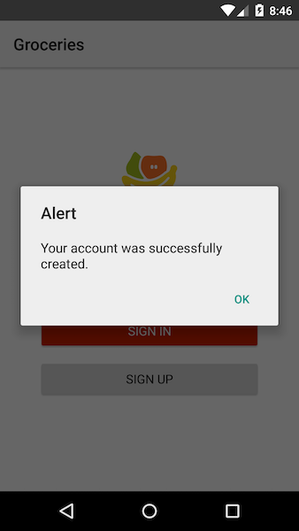 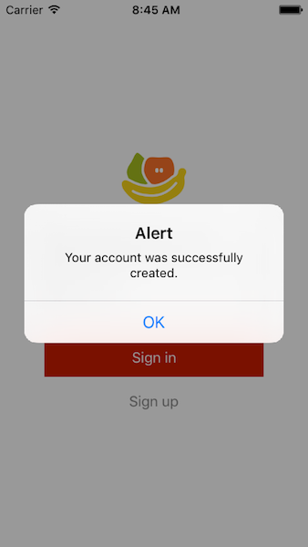
TIP: After creating your account, you may wish to hardcode your credentials in your
AppComponent’sconstructor()to make development faster for the rest of this guide. ``` TypeScript constructor(private userService: UserService) { this.user = new User(); this.user.email = "user@nativescript.org"; this.user.password = "password"; } ```
Your app now has a fully functional registration process, but users can’t do anything with the accounts they create. Our next step is to allow the users to login and navigate to a new list page. And to do that we need to introduce the concept of routing.
3.5: Routing
Most of the Angular 2 concepts you’ve used in the last few sections are the same regardless of whether you’re building for the web or native apps. You are even able to share model objects and services directly between the two environments.
However, routing is a bit different, as there are some fundamental differences between how the concept of routing works on the web and in apps. Routing on the web revolves around the concept of a URL, but in a native app there is no browser. Likewise, native apps have concepts that aren’t present in the browser, such as Android’s hardware back button, or iOS’s swipe left-to-right gesture to go back.
Because of that, even though NativeScript uses the same Angular 2 routing APIs, you must designate certain Angular components in your app as “pages”—which is something you don’t necessarily have to do in an Angular 2 web app. In Groceries the code for these pages is in the app’s pages folder. Let’s look at this works in an exercise, and then step back and discuss why NativeScript takes the approach that it does.
Exercise: Setting up routing
To this point you’ve been putting your login page code in app.component.ts. Let’s move that logic into the pages/login folder to make room for additional pages.
First, open app/app.component.ts and copy its contents into app/pages/login/login.component.ts.
Next, in login.component.ts, change the name of the class from “AppComponent” to “LoginComponent”, and update the two paths below accordingly:
Now that app.component.ts is empty, let’s add in the appropriate Angular 2 routing code. Start by opening up app/app.routing.ts up and pasting in the following code:
The app.routing.ts file is where you declare a list of all your app’s routes. Right now your routes array has a single route for the login page, but you’ll add more momentarily. To get this app running you need to make two more changes.
First, open app/app.module.ts and replace the file’s contents with the following code, which adds a new NativeScriptRouterModule import, as well as imports the routes you just declared in app.routing.ts.
NOTE: An
NgModule’sdeclarationsarray expects a list of the components that you’ll be using in your app. In this case you’re adding thenavigatableComponentsarray you exported in theapp.routing.tsfile to theAppComponentdeclaration you already had. The...operator is ES2015 spread syntax, and it’s easiest to explain what it does with a quick example. If you declare a variablexaslet x = [2, 3], then JavaScript will interpret[1, ...x]as[1, 2, 3].
And finally, open app/app.component.ts back up and paste in the following code. We’ll discuss this file in detail momentarily.
If you haven’t played with routing in Angular 2 before, you can refer to Angular’s guide on the topic for some background, but the basic concept is you need to declare a routes array that includes a list of all components the user can navigate to, as well as a path to use to access those components. When you need to add new routes, you import the appropriate component in app.routing.ts, and then include that component in the routes array.
The other new concept in this example is the <page-router-outlet> tag, which is your app’s first directive. You can again check out Angular’s docs if you want detailed information on what directives are and do, but the simplest way to think of a directive is as something that can affect the markup you put in your template—in this case <page-router-outlet>.
And to take a step back, that directive, <page-router-outlet> is the only difference in routing between the routing code above and the same code in the Groceries web implementation. Angular 2 provides a <router-outlet> directive for web apps, and NativeScript extends that directive with its own <page-router-outlet> directive that handles the unique environment of iOS and Android apps. The great thing about NativeScript is those details are transparent to you as a developer.
At this point your router code should work, but the app is no different than it was at the beginning of this section. Let’s add another page to see the routing in action.
Exercise: Create the list page
Open pages/list/list.component.ts and paste in the following code, which you’ll use as the start of a simple list page:
For now, we’ll keep the list page simple so you can see how the routing works. But so that there’s something to see, open pages/list/list.html and paste in the following label:
After that, go back to app/app.routing.ts and update the file with the following code:
Angular 2 now knows about the list page, but we still need to navigate the user to that page at the appropriate time. Our next step is to allow users to log into their accounts, then navigate them to the new list page after they have successfully authenticated.
To do that, start by opening app/shared/user/user.service.ts and add the login() function below to the existing UserService class:
This code hits one of our existing backend endpoints, and stores off a authentication token that we’ll use later in this guide.
To use this login() function, return to app/login/login.component.ts, and add the following import to the top of the file:
Next, replace the current constructor() declaration with the code below, which injects Angular 2’s Router service:
Finally, replace the LoginComponent’s existing login() function with the code below:
NOTE:
- You don’t have to add
Routerto yourLoginComponent’sprovidersarray because it’s already included in theNativeScriptRouterModuleyou’re including as animportinapp.module.ts.- Refer to the NativeScript navigation documentation for more information on what you can do with the router in NativeScript, such as configuring alternate page transitions.
After this change you can now navigate between the login and list pages in your app:
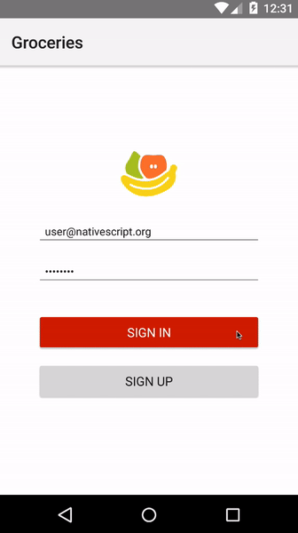 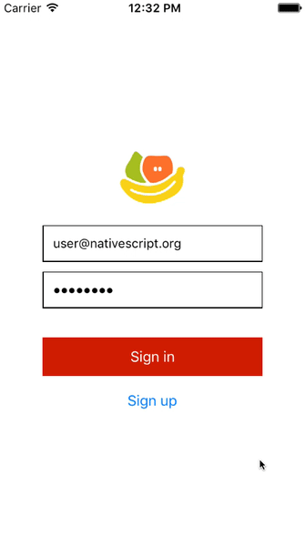
The power of NativeScript is you have the ability to use the same Angular conventions that you’d use in a web app—Router and so forth—yet get an app that fits right in on iOS and Android. Notice how on Android the hardware back button works as expected, and how your iOS app uses built-in iOS animations and conventions such as the back button.
TIP: There are other ways to share code between native and web apps besides the
sharedfolder convention Groceries uses. For an approach that places web and native code in the same codebase, that also provides some additional tooling around testing and internationalization, check out Nathan Walker’s advanced Angular 2 seed project.
Now that we’ve discussed how NativeScript apps and Angular 2 web apps are similar, let’s move onto how they’re different. When you’re building with NativeScript you have access to the entirety of iOS and Android, as well as the highly capable devices they run on—enabling you to build rich experiences that go above and beyond what the web can offer.
The best part is, one NativeScript feature makes it trivial to tie into this native device functionality: NativeScript modules.